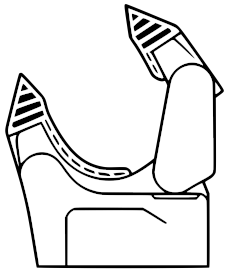
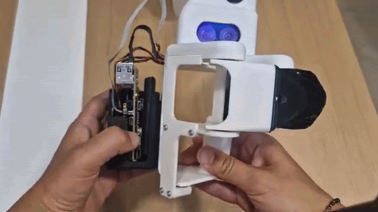

A handheld gripper that records what you do,
to create datasets ready for model-training,
to apply directly to any robotic arm with Gripette.
First steps to get started with your new Grabette
Give the device a moment to start up before going to the next step.

You only need to have your Bluetooth on and to be next to your Grabette.
Pick yours from the browser's list.
Also encrypts the password. Used up by each WiFi command.
Need to re-authenticate before making a new command.
Allows you to get an overview of Grabette’s sensors and data and log in to HuggingFace there.
Bookmark it, you will not need this page again.
Make sure you're on the same network as Grabette.
Finish WiFi setup — the link appears once the Grabette reports its address.